ASTR101 Ch 22-23
Ch 22 - Stars from Adolescence to Old Age
Evolution from the Main Sequence to Red Giants
- We've traced stellar evolution up to the main sequence.
- The main sequence is where the star sustains itself through fusion.
- It's referred to as the prolonged adolescence or adulthood stage of the star's life cycle.
- Left edge of main sequence below is referred to as the zero-age main sequence, where stars first fuse hydrogen and settle in to the main sequence.
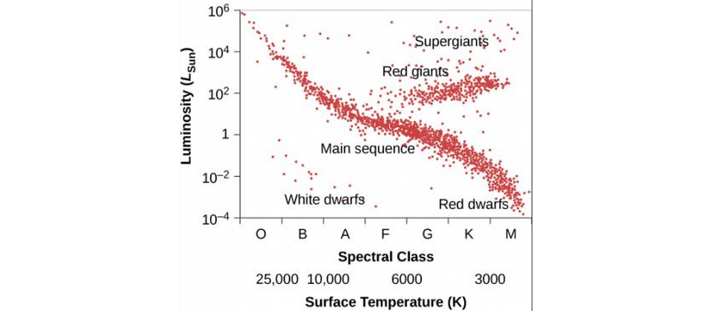
- While on main sequence, mass doesn't change much (only .7% of mass is converted to energy in fusion) but chemical composition goes from mostly Hydrogen to more and more Helium.
- This change in composition changes the star's temperature, luminosity, size, and interior structure.
- This moves it along the H-R diagram! How?
- As H converts to He through the nuclear pp-chain, the inner density increases, increasing temperature, giving protons more speed on average, resulting in more collisions, and a much higher rate of fusion.
- The rate of fusion of the pp-cycle increases with temperature as
\[\mbox{Rate of pp-fusion}\propto{}T^4.\]
- So temperature increases, and luminosity will increase due to the increased rate of fusion (which produces increased rate of energy).
- This means up and to the left on the H-R diagram, but these changes are relatively small and most stars remains on the main sequence for most of their lives.
Lifetimes on the Main Sequence
- How long a star stays on the main sequence depends on how much fuel it starts with and how quickly it uses it up.
- More massive stars use up fuel more quickly since they need greater inner temperatures to balance out the much higher pressures of outer layers, and the rate of fusion goes as T4.
- On average, 90% of a star's life is spent on the main sequence. This time depends on its mass.
- Turns out a mass of .4 gives the star around 200 billion years on the main sequence, while a mass of 40 solar masses is a mere million years (Table 22.1).
From Main-Sequence to Red Giant
- Eventually, hydrogen in the core is depleted with helium in its place (and whatever heavier elements it had to start with).
- The temperature for helium fusion is much higher, so that doesn't happen in these stars.
- The star begins to shrink, and its brightness and heat comes from the conversion of gravitational into heat energy (as Kelvin and Helmholtz posited).
- This process heats up the hydrogen that was just outside the core the whole time enough for it to undergo fusion, which in turns heats up layers outside of it, causing them to expand.
- Meanwhile the helium core keeps contracting, giving out more heat, causing more fusion.
- Most star burns brighter than it ever did in this stage, since the fusion is not confined to the core.
- The increased heat causes the outer layers to expand, and the star's size increases ridiculously.
- This increase in size results in a decrease in temperature. So our star is now cooler (to the right H-R) but also more luminous (up on H-R).
- As stars evolve, they become more red.
- This stage represents the star's old age.
- Remember that more massive stars go through every stage much faster.
- E.g., Betelgeuse is 10 million years old but is already a red supergiant (compared to the red star that is the 4.5 billion year-old Sun), because it's 16 times more massive.
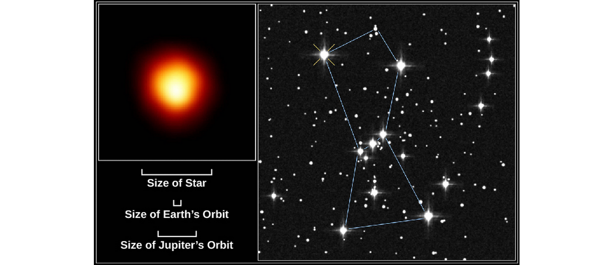
Models for Evolution to the Giant Stage
- We discussed two evolutions; one is the adolescent formation of stars to the zero-age main sequence (ZAMS) of Ch. 21, one is the old-age evolution of stars out of the main ZAMS that we've just discussed.
- Both plots depend on mass.
- Remember, they represent different parts of a star's life cycle.
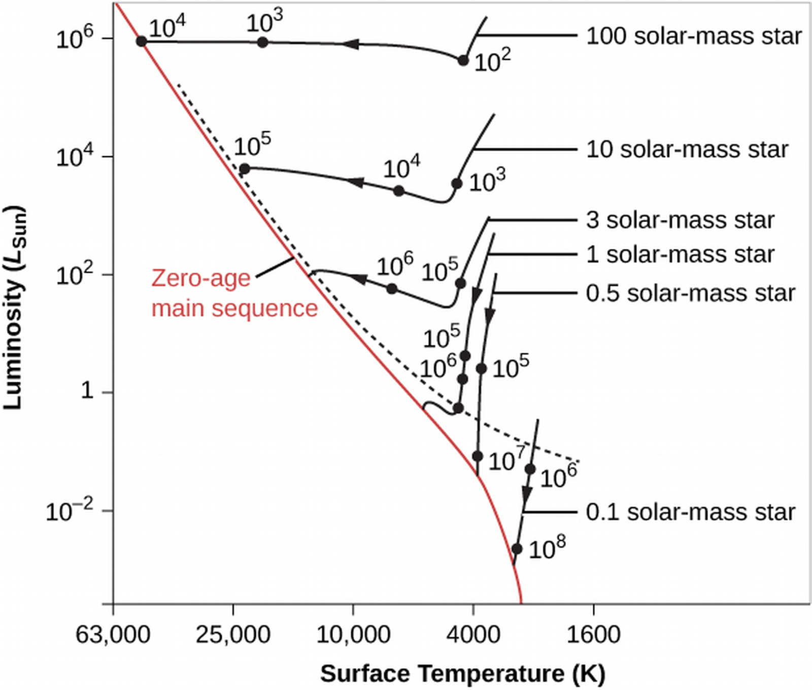
Figure 3: Young star evolution to ZAMS.
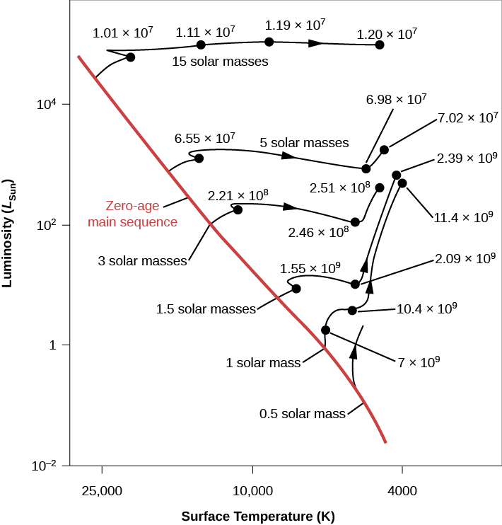
Figure 4: Old star evolution from ZAMS.
Star Clusters
- These time scales span millions and billions of years, so we can't directly observe a star's life cycles.
- We can turn to star clusters, wherein the stars were born at approximately the same time, of the same material, in the same conditions, but have different masses (therefore evolve at different rates).
- This is like looking at a snapshot at various times of a star's life, all at once.
Star Clusters
- There are three types of star clusters: globular clusters, open clusters, and stellar associations.
- Stellar associations contain the youngest stars, followed by open clusters, followed by globular clusters, on average.
Globular Clusters
- Globular clusters are most scarce in the Milky Way, there are only 150 of them.
- They hang out at the halo and central bulge of the Galaxy.
- Live billions of years.
- Very dense in stars
- Contain only very old stars.
Open Clusters
- Open Clusters number in the thousands in the Galaxy.
- Very small, at diameters less than 30 Ly.
- Hang out in the disk and spiral arms.
- Average lifespan of a few hundred million years.
- Not very dense (hence, "open").
- Fast stars often leave the clusters.
Stellar Associations
- Associations also number in the thousands.
- Hang out in the spiral arms.
- Lifespans up to tens of millions of years.
- Association stars are extremely young.
Checking out the Theory
H-R Diagrams of Young Clusters
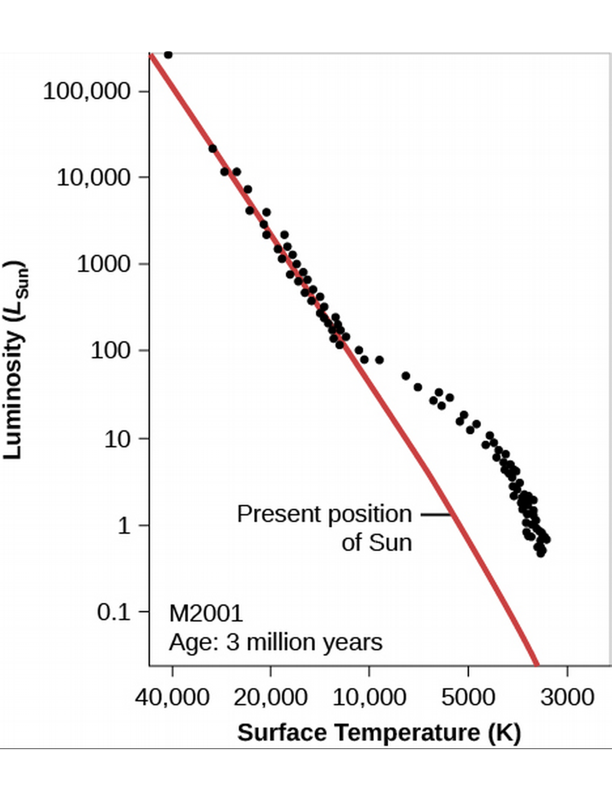
Figure 5: Young, 3 million year-old cluster (computational).
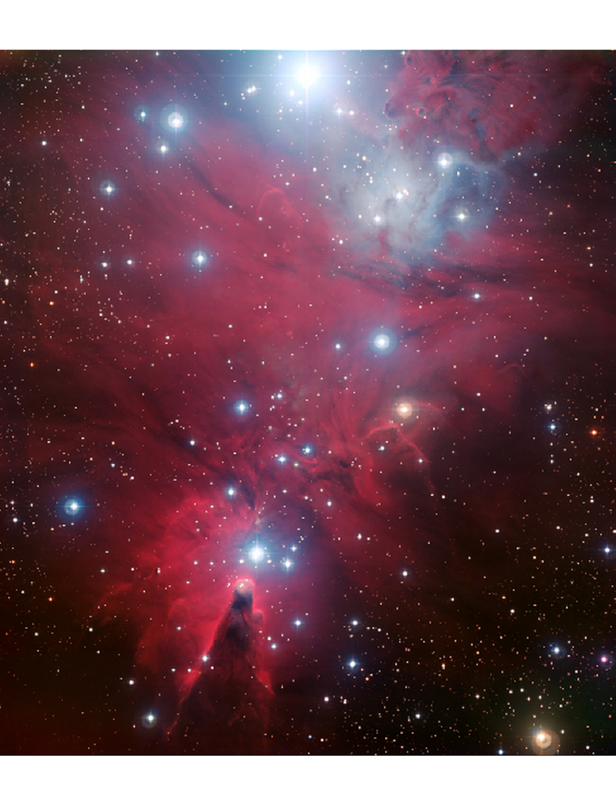
Figure 6: NGC2264, Christmas Tree Cluster — young, dusty.
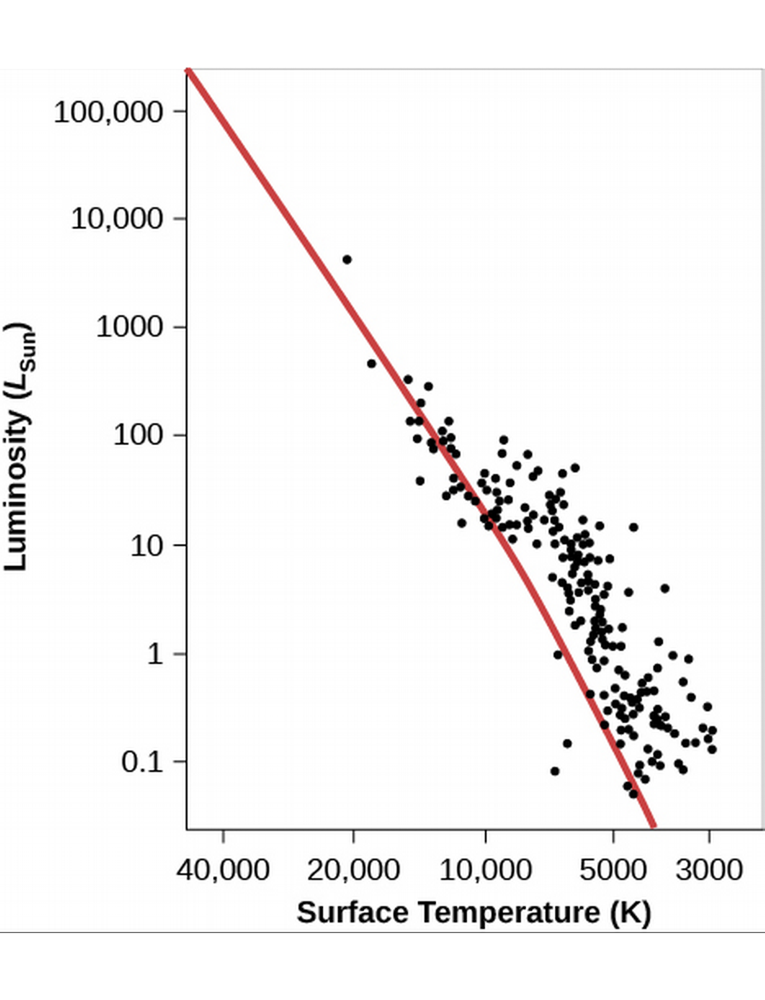
Figure 7: NGC 2264 H-R Diagram—good agreement!
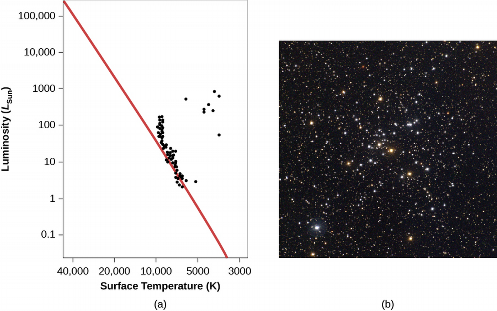
Figure 8: Cluster M41 is about 100 million years old (older, more orange stars).
H-R Diagrams of Older Clusters
- In older clusters, the stars a few times more massive than the Sun and heavier have left the ZAMS.
- The point where stars being leaving the main sequence is called the main-sequence turnoff.
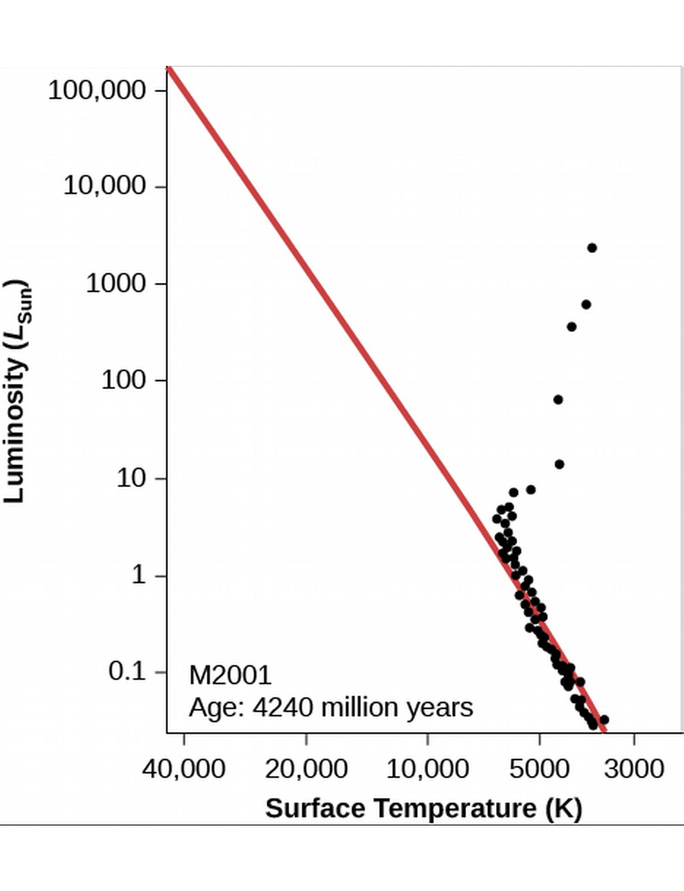
Figure 9: Old, 4.24-billion year-old cluster (computational).
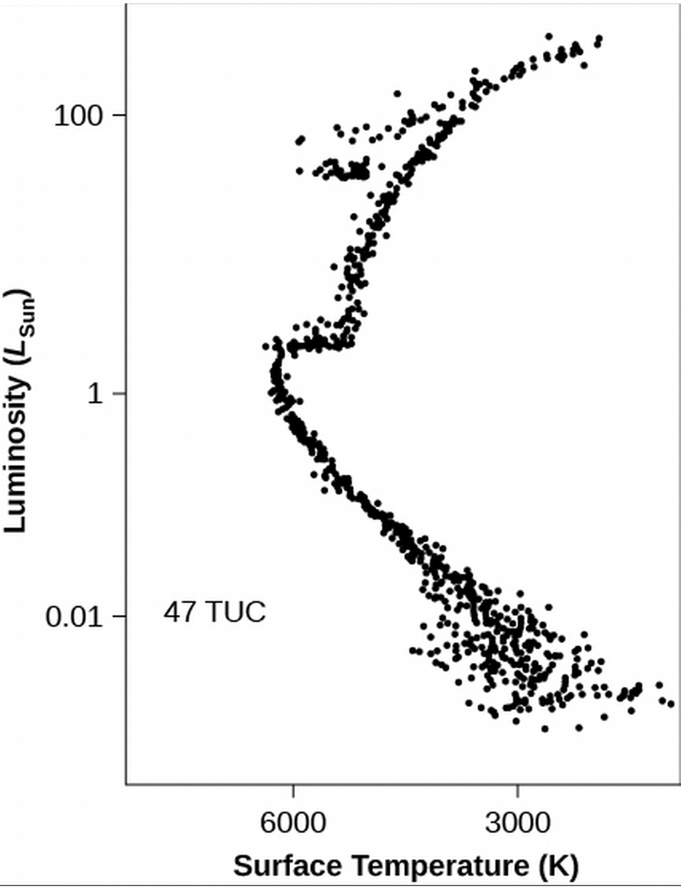
Figure 10: Cluster 47 Tucanae, zoomed in luminosity.
- We can get the age of a cluster from its main-sequence turnoff!
- I.e., the later we wait, the more less-massive stars have time to get off the ZAMS.
- The specific rate is attained by comparing simulation to observation.
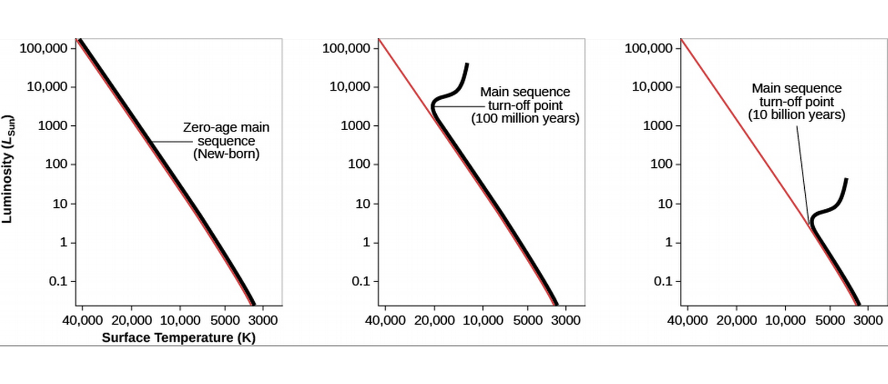
Further Evolution of Stars
Helium Fusion
- Let's focus on stars with initial low masses, about twice the solar mass (initial because the mass will change) and lower.
- When gravity shrinks the star, the core temperature can reach higher temperatures than it had in its main-sequence days.
- When it reaches 100 million K, it's hot enough for the triple-alpha process of fusion of three helium atoms into a single carbon nucleus.
- All carbon on Earth was once made in a red giant!
- The triple-alpha process requires three helium atoms—each of which has double the protons and hence electric repulsion as hydrogen—to collide together, simultaneously.
- This is unlike the pp-chain in which only two particles collide at a time, making it a much more scarce reaction.
- So it's understandable that the temperature needed, 100 million K, is much greater for this process.
- In low-mass stars, this ignites the entire core in a fusion chain reaction called a helium flash (in higher-mass stars, it's not a flash, but a slower process).
- The flash increases temperature, heating the core, in turn increasing nuclear fusion reactions in a runaway generation of energy!
Becoming a Giant Again
- The star comes to balance after the helium flash, now producing more energy at its core so that its surface temperature increases, but its overall luminosity decreases (left and downwards on H-R).
- Sometimes, carbon will collid with helium to form oxygen.
- This new stability feeding on the fusion of helium is short-lived because of the very fast rate of fusion, caused by the high temperature.
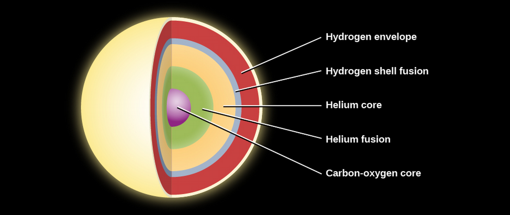
Figure 12: Layers in a low-mass star before death.
- After the helium is used up, the star's fusion is once again depleted, gravity takes over again, and it begins to shrink.
- This again causes the core to heat up adjacent shells—this time, of unfused helium in the middle shells as well as unfused hydrogen in the outer shells, returning it for a short time to the red giant stage.
Mass Loss from Red Giant Stars and the Formation of Planetary Nebulae
- As stars expand prior- and post-helium flash, they become very large, so that it's easier for outer particles to escape their gravity.
- Stars lose a lot of gas this way, in expanding shells corresponding to the changing radius of the star as it contracts with its nuclear exhaustion, expands with the helium flash, contracts again with nuclear exhaustion (of He), etc.
- Each shell can contain 10-20% of the star's mass.
- How many times will a star, having exhausted its fuel, spark a new fuel source? Only once (helium) for these low-mass stars.
- The star instead continues to compress, reaching surface temperatures as high as 100,000 K.
- At this stage, the stars emit strong UV-radiation and stellar winds which heat up the gases they emitted in their red giant stage and ionize them, causing them to glow.
- The result are misnamed, planetary nebulae, a name that has stuck. Obviously, there are no planets involved here.
- Our galaxy has tens of thousands of planetary nebulae.

Figure 13: Planetary nebulae.
- Why do planetary nebulae have such different shape?
- One possibility is that they all have the same shape, but are viewed from different angles.
- This requires that they all be shaped like donuts.
Cosmic Recycling
- The expelled mass of dying stars can form new stars.
- But these are different (more complex) atoms.
The Red Giant Sun and the Fate of Earth
- 4.5 billion years ago, the Sun just reached the zero-age main sequence and emitted only about 70% of its present radiation (Earth is theorized to have had more carbon dioxide in its atmosphere, keeping it warm enough to match evolution).
- As the Sun warmed, CO2 was more readily absorbed in the hotter Earth into rocks and other reactions, decreasing its presence in the atmosphere, resulting in more stable climate. This will continue in the future (but on way too slow a timescale to undo likely global warming effects of the next century).
- As the polar caps and oceans begin to evaporate, however, we are set to eventually have a Venus-like runaway greenhouse effect in .5-2 billion years.
- Not to mention, the Sun will eventually become a red giant—so large, it will swallow Mercury and Venus, Earth likely to follow.
- What can we do?
- One idea is to literally move the Earth to a farther orbit.
- We could redirect an asteroid to move close enough to Earth to give Earth a gravity assist (like spaceships have stolen gravity from other planets, Earth would steal it from the asteroid) to move outward.
The Evolution of More Massive Stars
Making New Elements in Massive Stars
- Now we know where Carbon (and sometimes Oxygen!) is made. Only in stars, where the pressures and temperatures are so unimaginably high. What about more massive atoms? Where do they come from? They can never be made in low-mass stars.
- When more massive stars start burning helium, they do so much more gradually, becoming so bright and large that we call them supergiants.
- They grow up to a diameter the size of Jupiter's orbit (Betelgeuse's size!).
- They also give off a lot of mass in stellar winds and outbursts.
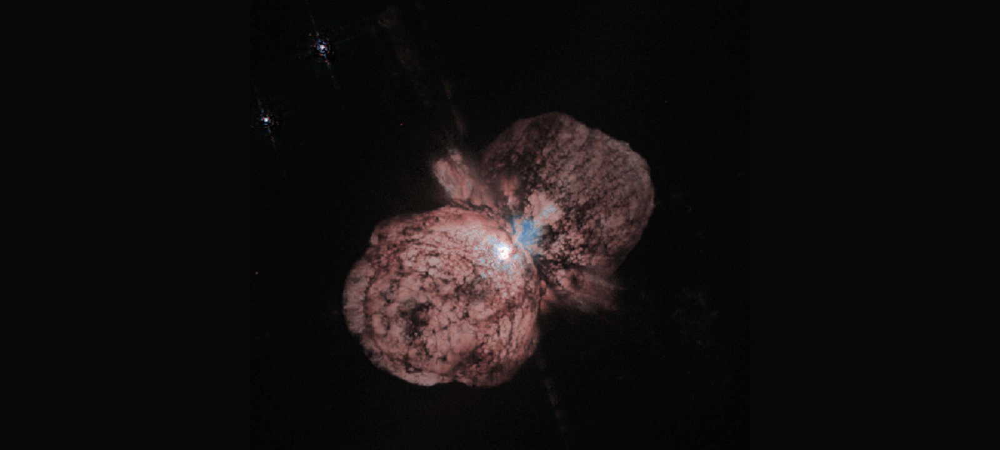
Figure 14: Eta Carinae (100 solar masses) has released a lot of mass.
- Stars with masses greater than 8 solar masses compress the carbon-oxygen core enough to ignite fusion of carbon into oxygen, and at even higher temperatures, oxygen into neon into magnesium and silicon.
- The endpoint of this process is Iron, which we discussed is the first element to require energy for fusion.
- So how do we get more massive atoms? We'll see when we study the death of the star.
- The process of making new atomic nuclei is termed nucleosynthesis.
- The theory of nucleosynthesis is accurate enough to correctly deduce the relative abundance of atoms in stars.
Elements in Globular Clusters and Open Clusters Are Not the Same
- Globular and open clusters have different abundances of elements heavier than helium.
- Since globular clusters are older, the ancient stars transmitted heavier elements into the clouds that made the next generation, and so on, so that globular clusters will have more heavier elements.
- Astronomers are searching for first-generation stars, made of only hydrogen and helium, from very distant galaxies which formed when the universe was only a few hundred million years old, whose light is just reaching Earth now.